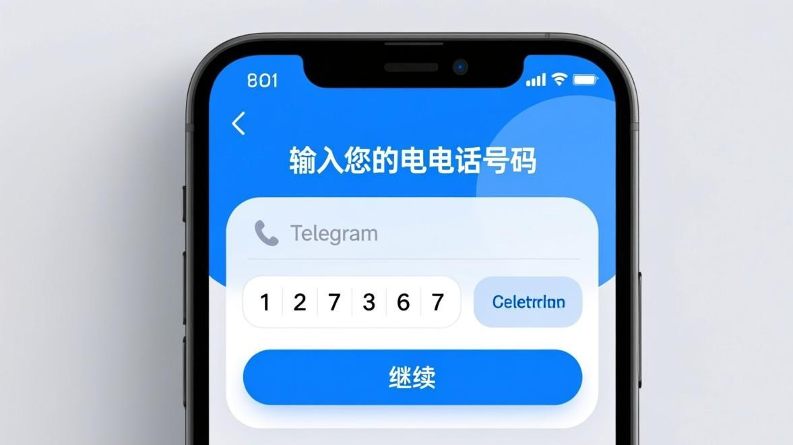
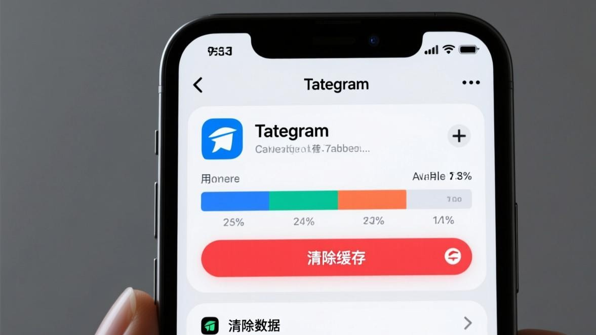

TG账号登录失败常见原因与对应修复方法
跟登录转圈那种"没有任何提示"的情况不同，登录失败通常会有明确的错误提示弹出来。但这些提示大多是英文的，什么FLOOD_WAIT、NETWORK_ERROR，看着一脸懵。别担心，我把最常见的几种报错代码整理出来，告诉你每种是什么意思、怎么解决。

常见登录失败错误代码解析
1. FLOOD_WAIT —— 你太频繁了
什么意思：你在短时间内尝试登录的次数太多，Telegram的保护机制临时限制了你这个号码的登录请求。
怎么解决：错误提示里通常会带一个数字，比如 FLOOD_WAIT_120 就是让你等120秒（2分钟）。一定要等够时间再试，如果等完了还是报这个错，再等一轮，每次等待间隔要延长。期间千万不要反复点击，越点等待时间越长。最长限制一般不超过24小时。
2. NETWORK_ERROR / CONNECTION_FAILED —— 连不上服务器
什么意思：你的手机无法连接到Telegram的服务器。
怎么解决：跟登录转圈的排查路径一样。先切换网络（WiFi和移动数据互切），再尝试修改DNS为 8.8.8.8 和 1.1.1.1，最后清除Telegram缓存后重试。详细的每步操作方法可以看登录转圈修复教程。
3. PHONE_NUMBER_INVALID —— 手机号格式不对
什么意思：你输入的手机号格式不被识别。
怎么解决：确认手机号前面选了正确的国家区号（中国大陆是 +86），号码中间不要有空格、横杠或括号。正确格式例如：+8613800138000。有些输入法会在数字中间自动加空格，输入完后仔细检查一下。
4. PHONE_NUMBER_BANNED —— 号码被封了
什么意思：这个手机号被Telegram封禁了，通常是用这个号注册的账号之前违反了使用条款。
怎么解决：唯一的官方途径是发邮件到 recover@telegram.org，说明你的手机号和具体情况，申请解封。处理时间一般1到7个工作日，期间不要重复发送相同内容的邮件，会延长处理时间。
5. PHONE_CODE_EXPIRED —— 验证码过期了
什么意思：你收到验证码后拖太久才输入，Telegram的验证码有效期只有5分钟。
怎么解决：回到登录页面，点击重新发送验证码。这次收到后尽快输入。如果短信总是延迟很久才到，试试语音验证码方式（等2分钟后登录页会出现"通过语音电话接收代码"的选项）。
6. PHONE_CODE_INVALID —— 验证码输错了
什么意思：你输入的验证码不正确。
怎么解决：核对验证码的5位数字，注意不要看错数字（比如0和8、1和7容易搞混）。如果是自动填充的验证码出错，手动重新输入一遍。

按错误类型快速索引
网络类错误（NETWORK_ERROR、CONNECTION_FAILED、TIMEOUT）
→ 切换网络 → 改DNS → 清缓存 → 重装App
频率限制类错误（FLOOD_WAIT）
→ 等待提示的秒数 → 不要重复操作 → 等待期间关闭App
账号类错误（PHONE_NUMBER_BANNED、ACCOUNT_DISABLED）
→ 发邮件到 recover@telegram.org → 说明情况 → 等待1-7天回复
格式/验证类错误（PHONE_NUMBER_INVALID、PHONE_CODE_EXPIRED、PHONE_CODE_INVALID）
→ 检查区号 → 去掉空格横杠 → 重发验证码 → 确认数字正确
注意事项
- 遇到FLOOD_WAIT一定要忍住不重试，越试等待时间越长，最坏能等到第二天
- 手机号被封不代表你的手机有问题，换一个号码注册新账号也是可行的
- 刚卸载重装后登录失败，等3到5分钟再试，服务器端可能还没完全释放旧会话
- 如果报错只显示"登录失败"没有具体代码，建议更新Telegram到最新版本，新版会显示更详细的错误信息
常见问题
Q：FLOOD_WAIT最长要等多久？
具体看代码里的数字。FLOOD_WAIT_60 是60秒，FLOOD_WAIT_3600 是1小时，FLOOD_WAIT_86400 就是24小时。实际中最常见的是60到120秒。
Q：邮件申请解封多久能回复？
通常1到7个工作日。如果超过7天没回复可以再发一封问一下进度，但不要一天发好几封。
Q：登录失败但没显示任何错误代码？
有些旧版本只弹"登录失败"四个字。去应用商店更新Telegram到最新版，新版本会显示更明确的错误类型。